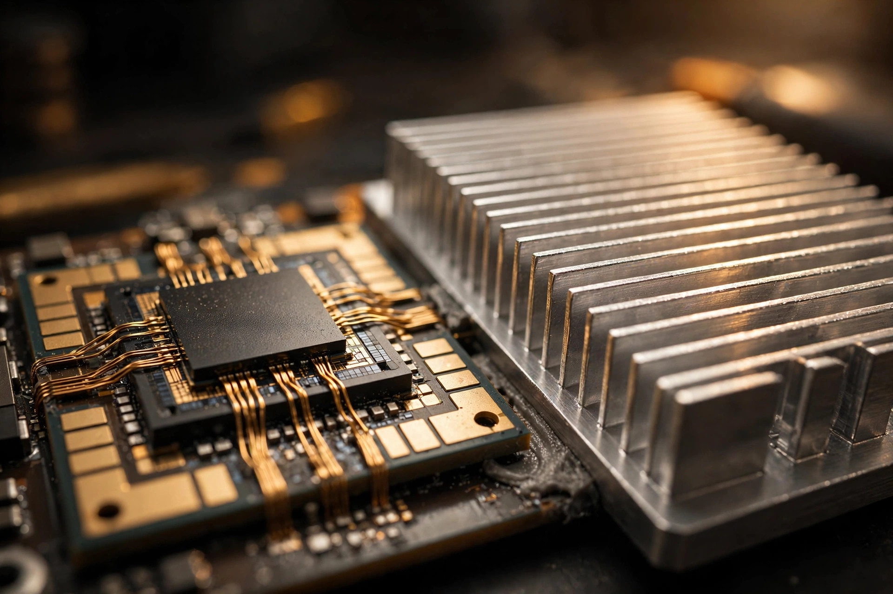

Wide Bandgap, Deep Bass: Porsche's Gallium Nitride Subwoofer Amplifier
Porsche has fought its war on weight with titanium bolts, magnesium wheels, and carbon-fiber everything. Its newest front is the stereo: a gallium nitride chip now handles the voltage conversion in the Burmester subwoofer amplifier, making the whole unit lighter and cooler, with series production from 2027.

On August 21, 2026, Porsche's newsroom published one of those announcements that sounds minor until you read the physics behind it. The Burmester 3D High-End Surround Sound System will become, Porsche says, the world's first production-ready high-end automotive audio system to use gallium nitride semiconductors. A GaN-based high-performance chip takes over the voltage conversion feeding the 400-watt subwoofer amplifier. Production begins in a future vehicle in 2027. Nobody is going to buy a Porsche because of the transistors in its stereo, and that is precisely why this is worth writing about: when an automaker applies wide-bandgap semiconductor physics to the least likely subsystem in the car, it tells you where the technology is really headed.
Start with why a stereo has any business containing a power semiconductor story at all. A 400-watt subwoofer amplifier is, from an electrical standpoint, a power converter wearing a tuxedo: it takes the car's 12-volt (or higher-voltage) supply and converts it, at high switching frequencies, into the precise waveforms that move a speaker cone. Every watt that does not reach the speaker becomes heat, and heat in an amplifier means aluminum heat sinks, larger capacitors, larger inductors, and mass. The conversion stage is the hungriest, hottest part of the audio chain, which is exactly where Porsche put the GaN.
The material: 3.4 electron volts of headroom
Gallium nitride is a wide-bandgap semiconductor, which is a fancy way of saying it takes a lot more energy to knock an electron loose in GaN than in silicon. Silicon's bandgap is about 1.1 electron volts; GaN's is about 3.4. That single material property cascades into everything a power converter cares about: the transistors can block higher voltages in a thinner device, switch on and off far faster, and lose far less energy each time they do it. Porsche's own release puts it plainly, saying GaN-based switches allow higher switching frequencies and exhibit significantly lower switching losses than comparable silicon-based transistors.
Less loss per switching event means less heat generated, which means the cooling hardware gets smaller. Porsche quantifies it: the heat sink in the GaN subwoofer amplifier is about 20 percent lighter than the conventional equivalent, and the passive components, the capacitors and inductors surrounding the chip, can be made smaller as well because they are being switched faster and worked less hard. Shrink the heat sink, shrink the passives, and the whole amplifier gets lighter and more compact. There is also a sustainability footnote Porsche could not resist: the heat sink is aluminum, aluminum production is energy-intensive, and using less of it avoids CO2 emissions in manufacturing. Whether a subwoofer amplifier's heat sink moves any sustainability needle is debatable, but the physics it rides on is not.
GaN did not come out of nowhere. The material first found wider application in blue LEDs in the 1990s, the same gallium nitride work that earned a Nobel Prize in 2014, and today GaN chips sit in everything from compact USB chargers to satellites in orbit. Porsche's release runs through that lineage deliberately: the material is proven in harsh, weight-sensitive environments, and a sports car's electrical system is both. What is new here is automotive audio as the beachhead, and that choice is the interesting engineering decision.
Why the subwoofer, and why now
Bass is where audio amplifiers burn their lunch money. High frequencies demand precision but little power; low frequencies demand sustained, high-current drive to shove a heavy cone back and forth dozens of times a second. In a multi-channel system like Burmester's, which runs 21 speakers and 21 amplifier channels with total system output north of 1,400 watts depending on the vehicle, the subwoofer channel is the single largest continuous load. Putting the most efficient conversion technology on the heaviest load is not cleverness for its own sake; it is basic engineering triage.
There is a second reason, and it is about the ears. Higher switching frequencies push the amplifier's switching noise further above the audible range, which is the oldest trick in Class D amplifier design executed better than ever. A GaN switch can toggle hundreds of kilohertz faster than a silicon MOSFET with a fraction of the loss, and that headroom gives the audio engineers cleaner control of the output filter. Porsche's release says GaN enhances the sound experience, and while that phrasing is marketing, the mechanism behind it is real: faster, cooler switching buys you both smaller parts and a quieter noise floor.
Credit where it is due: Porsche's team has been on this since mid-2023, when the idea of putting GaN into a sports car's audio system first surfaced internally. From spring 2024, a cross-functional team of audio, semiconductor, and sustainability experts worked with the Institute for Robust Power Semiconductor Systems at the University of Stuttgart on the first prototype of a GaN-based subwoofer amplifier, a project the two sides call "Driven by GaN." A leading international chip manufacturer and an audio development partner joined the effort, and Porsche says it has already filed several patent applications to protect what came out of it. That is a three-year arc from lab curiosity to production intent, which, by automotive timelines, is practically sprinting.
The play behind the play
Now the part that matters more than the bass. Dr. Lars Heuken, who runs strategic semiconductor management at Porsche, is quoted in the release saying the quiet part out loud: "The potential is huge, and this is just the beginning. GaN is ideal wherever power is converted." Porsche is explicitly evaluating GaN for power conversion in high-voltage systems, which is corporate-speak for the parts of an electric car where efficiency actually moves the range needle: inverters, onboard chargers, DC/DC converters.
This is the crossover moment. Wide-bandgap semiconductors already live in EV power electronics, mostly in the form of silicon carbide, which this blog covered when it looked at SiC inverters. SiC and GaN are siblings with different strengths: SiC handles the kilovolt-class punishment of traction inverters, while GaN switches faster at lower voltages and is arguably the better fit for onboard chargers and auxiliary converters. Porsche choosing audio as GaN's first automotive application is a low-risk proving ground for a technology the company plainly intends to push into the high-voltage domain. Validate the chips, the packaging, and the automotive-grade reliability on a subwoofer, then carry the supply chain and the patents into the powertrain.
It also reframes a line from the release that reads like corporate puffery until you think about it. "A powerful bass foundation is part of the emotive experience our customers expect from a Porsche," says Steffen Burosch, the man responsible for audio system innovations at the Weissach development center. Read it as an engineer: the company is willing to redesign power electronics around emotion. The bass has to hit; the mass budget has to shrink; the only way to satisfy both is better physics. That is, in miniature, the entire job description of performance-car engineering.
What we don't know yet
Honesty requires the caveats, and there are several. Porsche has not named which vehicle gets the GaN amplifier first, only that it debuts in a future vehicle in 2027. The company has not published the absolute weight saved in grams, only the 20-percent heat sink figure, so we cannot yet weigh the saving against the system's 1,400-plus watts. And neither I nor anyone outside Weissach has heard this thing; production is still a year out, and a press release about semiconductors is not a listening session.
Worth asking: does the higher switching frequency survive the automotive electromagnetic compatibility gauntlet, where a sports car's wiring harness is a minefield of interference sources? GaN's speed is a double-edged sword for EMC, and the patents Porsche filed may be as much about taming that as about the conversion itself. Does the efficiency gain hold up at the duty cycles of real listening, or only at the 400-watt peak the subwoofer rarely touches? And the big one: does any of this change what the system sounds like, or does the GaN amplifier reproduce exactly what the silicon one did, just lighter and cooler? A better-sounding stereo is a product win; an identical-sounding one that weighs less is still an engineering win, but the two are different stories.
One more question, the strategic one. If GaN validates in audio, how fast does it migrate to the high-voltage systems Heuken is already talking about? Porsche is evaluating it; the release is careful not to promise it. Silicon carbide owns traction inverters today, and displacing an entrenched, qualified power semiconductor is a multi-year argument. But the trajectory is set: the first GaN in a production car will arrive through the speakers, and the second will probably arrive through the powertrain. Materials have a way of colonizing a car from the edges inward, and gallium nitride just found its edge.
| Spec | Porsche GaN subwoofer amplifier |
|---|---|
| Application | Burmester 3D High-End Surround Sound System, 400-watt subwoofer amplifier |
| Semiconductor | Gallium nitride (GaN), bandgap ~3.4 eV vs ~1.1 eV for silicon |
| Function | Voltage conversion for the subwoofer amplifier stage |
| Heat sink | About 20% lighter (aluminum), reduced cooling requirement |
| Passives | Capacitors and inductors made smaller via higher switching frequencies |
| Development | Idea mid-2023; University of Stuttgart (Institute for Robust Power Semiconductor Systems) from spring 2024; project "Driven by GaN" |
| Partners | Leading international chip manufacturer; audio development partner (unnamed) |
| IP | Several patent applications filed |
| Production | Series production in a future Porsche vehicle from 2027 |
| Claim | World's first production-ready high-end automotive audio system with GaN |
| Future scope | GaN under evaluation for high-voltage EV power conversion (inverters, chargers, DC/DC) |
The sources for the facts above are Porsche's August 21, 2026 newsroom release, corroborated by coverage in The Drive, audioxpress, and StereoNET. The semiconductor background, bandgap figures, GaN history in blue LEDs, and the GaN-versus-SiC comparison are standard power-electronics knowledge, and the strategic read of audio as a proving ground for traction electronics is my own analysis, not Porsche's claim. I have not heard the amplifier, driven the car that will carry it, or seen which model gets it first, because none of those things exist yet outside Weissach. What exists is a press release, a three-year development program, and a material with a wider bandgap than the industry's habits. That is enough to write about, and in 2027 we get to find out whether it is enough to hear.